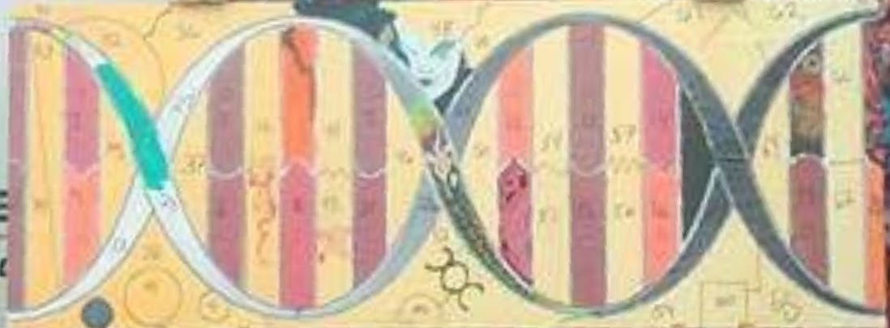
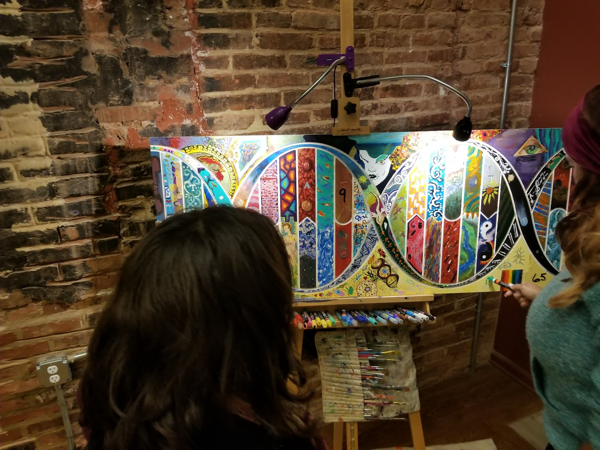
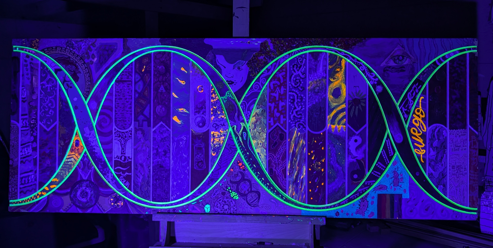

CODED
A journey through DNA and Phosphorescence.
Phase 1: The Structure

The initial canvas established the double helix structure before the chaos of collaboration began.
Phase 2: The Crowd

Over 60 participants added their own genetic code to the painting, creating layers of complexity.
Phase 3: Final State

The completed work.
Phase 4: Bioluminescence

Under blacklight, the hidden DNA strands glow.